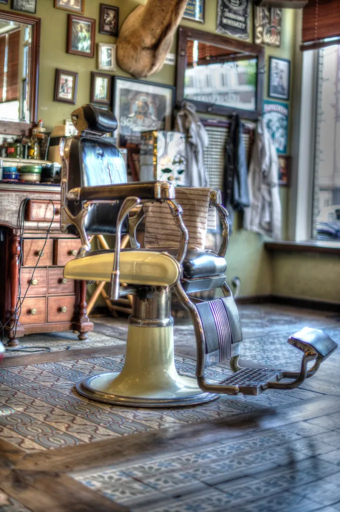

Clean, every time
Combs and blades go in the steriliser after every cut. Fresh towel, fresh neck strip.
About the shop
Nobody leaves until they are happy with it. That has been the rule on Call Lane since the shop opened, and it is the only one we never bend.

Kingsley's is a small, old-fashioned shop: a radio, a kettle, three red chairs that were already forty years old when we found them. You can walk in, or book a chair if you are short on time.
We do men's and boys' cuts, beards and shaves. Anyone who wants a short cut is welcome in the chair.
Who is in
Today is highlighted. Book the barber you like, or take whoever is free.
| Barber | Mon | Tue | Wed | Thu | Fri | Sat |
|---|---|---|---|---|---|---|
| Dev fades | ● | ● | ● | ● | ● | |
| Marcus beards, shaves | ● | ● | ● | ● | ● | |
| Joe longer hair | ● | ● | ● | ● | ● |
Combs and blades go in the steriliser after every cut. Fresh towel, fresh neck strip.
9 to 11 on Tuesdays: radio off, lights low, no rush. Made for kids and adults who find barbers loud.
Level entrance from Call Lane and a chair that lowers for wheelchair users.
£25 and £50 cards at the desk, in an envelope that looks like a ticket. See the cards